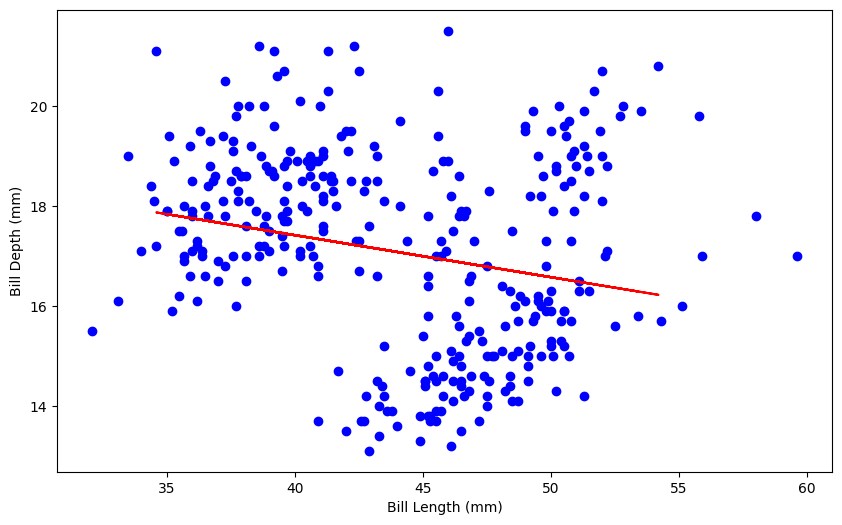
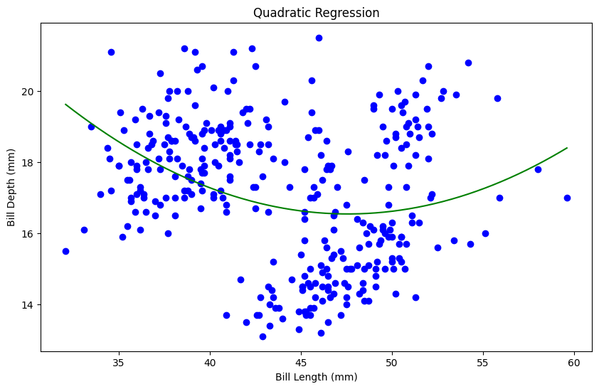
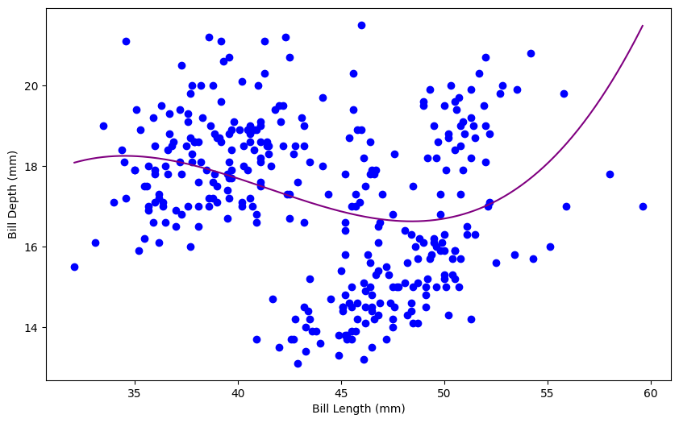
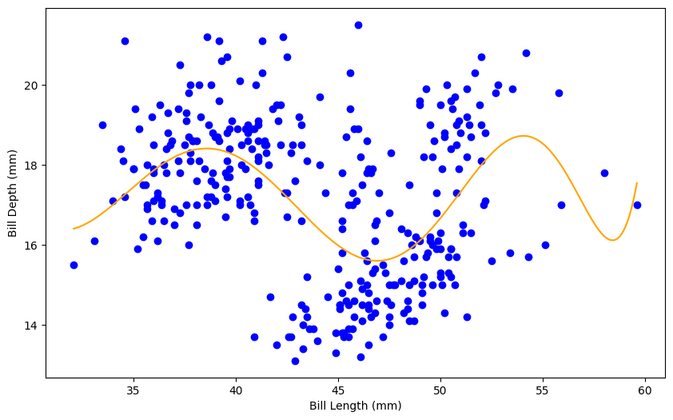

dummies = pd.get_dummies(penguins['sex'], drop_first=True) #ChatGPT recommended drop first to get rid of the female variable for simplicity.penguins_clean = pd.concat([penguins,dummies],axis=1)dummies = pd.get_dummies(penguins['species'])penguins_clean = pd.concat([penguins_clean,dummies],axis=1)dummies = pd.get_dummies(penguins['island'])penguins_clean.head()
species
island
bill_length_mm
bill_depth_mm
flipper_length_mm
body_mass_g
sex
year
male
Adelie
Chinstrap
Gentoo
0
Adelie
Torgersen
39.1
18.7
181.0
3750.0
male
2007
True
True
False
False
1
Adelie
Torgersen
39.5
17.4
186.0
3800.0
female
2007
False
True
False
False
2
Adelie
Torgersen
40.3
18.0
195.0
3250.0
female
2007
False
True
False
False
4
Adelie
Torgersen
36.7
19.3
193.0
3450.0
female
2007
False
True
False
False
5
Adelie
Torgersen
39.3
20.6
190.0
3650.0
male
2007
True
True
False
False
Let’s use bill_length_mm to predict bill_depth_mm. Prepare your data and fit the following models on the entire dataset:
Simple linear regression (e.g. straight-line) model
Quadratic (degree 2 polynomial) model
Cubic (degree 3 polynomial) model
Degree 10 polynomial model
Make predictions for each model and plot your fitted models on the scatterplot.
Training MSE: 3.651902827342011
Testing MSE: 3.732114173726634

data = load_penguins().dropna()X = data[["bill_length_mm"]].valuesY = data["bill_depth_mm"].valuesX_train, X_test, y_train, y_test = train_test_split(X, Y, test_size=0.25, random_state=42)#ChatGPT recommended hstack to concatenate the arraysX_train_quad = np.hstack([X_train, X_train **2])X_test_quad = np.hstack([X_test, X_test **2])model_quad = LinearRegression()model_quad.fit(X_train_quad, y_train)y_train_pred_quad = model_quad.predict(X_train_quad)y_test_pred_quad = model_quad.predict(X_test_quad)mse_train_quad = mean_squared_error(y_train, y_train_pred_quad)mse_test_quad = mean_squared_error(y_test, y_test_pred_quad)print("Training MSE:", mse_train_quad)print("Testing MSE:", mse_test_quad)# Used ChatGPT to help create a smooth predictor lineX_range = np.linspace(X.min(), X.max(), 300).reshape(-1, 1)X_range_quad = np.hstack([X_range, X_range **2])y_range_pred = model_quad.predict(X_range_quad)plt.figure(figsize=(10, 6))plt.scatter(X, Y, color="blue")plt.plot(X_range, y_range_pred, color="green")plt.xlabel("Bill Length (mm)")plt.ylabel("Bill Depth (mm)")plt.title("Quadratic Regression")plt.show()
Training MSE: 3.472896571991021
Testing MSE: 3.4011185530075814

data = load_penguins().dropna()X = data[["bill_length_mm"]].valuesY = data["bill_depth_mm"].valuesX_train, X_test, y_train, y_test = train_test_split(X, Y, test_size=0.25)#I was having issues with creating the cubic model - ChatGPT suggessted including the prior values as well (xtrain ** 2)X_train_cubic = np.hstack([X_train, X_train **2, X_train **3])X_test_cubic = np.hstack([X_test, X_test **2, X_test **3])model_cubic = LinearRegression()model_cubic.fit(X_train_cubic, y_train)y_train_pred_cubic = model_cubic.predict(X_train_cubic)y_test_pred_cubic = model_cubic.predict(X_test_cubic)mse_train_cubic = mean_squared_error(y_train, y_train_pred_cubic)mse_test_cubic = mean_squared_error(y_test, y_test_pred_cubic)print("Training MSE:", mse_train_cubic)print("Testing MSE:", mse_test_cubic)X_range = np.linspace(X.min(), X.max(), 300).reshape(-1, 1)X_range_cubic = np.hstack([X_range, X_range **2, X_range **3])y_range_pred = model_cubic.predict(X_range_cubic)plt.figure(figsize=(10, 6))plt.scatter(X, Y, color="blue")plt.plot(X_range, y_range_pred, color="purple")plt.xlabel("Bill Length (mm)")plt.ylabel("Bill Depth (mm)")plt.show()
Training MSE: 3.1623255112066087
Testing MSE: 3.950293729601405

data = load_penguins().dropna()X = data[["bill_length_mm"]].valuesY = data["bill_depth_mm"].valuesX_train, X_test, y_train, y_test = train_test_split(X, Y, test_size=0.25, random_state=42)# ChatGPT suggested this to create the 10th degree polynomial effect. Similar to above but used logic to include all degreesX_train_poly10 = np.hstack([X_train ** i for i inrange(1, 11)])X_test_poly10 = np.hstack([X_test ** i for i inrange(1, 11)])model_poly10 = LinearRegression()model_poly10.fit(X_train_poly10, y_train)y_train_pred_poly10 = model_poly10.predict(X_train_poly10)y_test_pred_poly10 = model_poly10.predict(X_test_poly10)mse_train_poly10 = mean_squared_error(y_train, y_train_pred_poly10)mse_test_poly10 = mean_squared_error(y_test, y_test_pred_poly10)print("Training MSE:", mse_train_poly10)print("Testing MSE:", mse_test_poly10)# Same as above used ChatGPT for reccomendation on line fittingX_range = np.linspace(X.min(), X.max(), 300).reshape(-1, 1)X_range_poly10 = np.hstack([X_range ** i for i inrange(1, 11)])y_range_pred = model_poly10.predict(X_range_poly10)plt.figure(figsize=(10, 6))plt.scatter(X, Y, color="blue")plt.plot(X_range, y_range_pred, color="orange")plt.xlabel("Bill Length (mm)")plt.ylabel("Bill Depth (mm)")plt.show()
Training MSE: 2.809026984780167
Testing MSE: 2.695552143924188

Are any of the models above underfitting the data? If so, which ones and how can you tell?
Are any of thhe models above overfitting the data? If so, which ones and how can you tell?
Which of the above models do you think fits the data best and why?
The linear model has similar values of MSE for test and training data so that is either underfitting or is a good predictor. The quadratic is similar in values as well so the same goes for that model. The cubic is overfitting to due having better MSE in the training. Lastly the 10 polynomial is also similar which is interesting because I would have thought it is overfitting. The quadratic model seems to be consistent and have the best predictions.